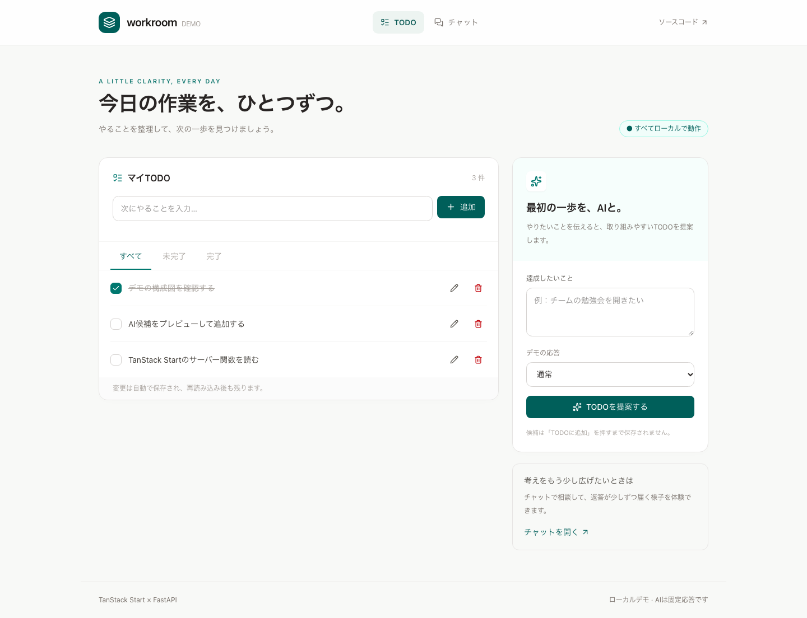
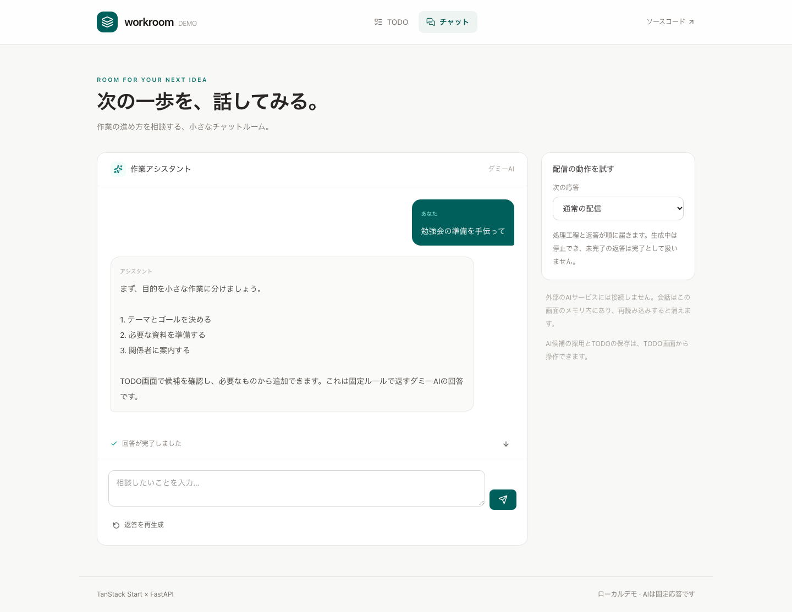

小さな作業を管理する
追加、編集、完了切り替え、削除。絞り込みはURLに残り、TODOはDBへ保存されます。
TODOの画面コード↗Implementation field notes / 01
TODOとダミーAIを題材に、画面からPython APIまでを追う。TanStack Startのサーバー関数と、Next.jsで書く場合の対応コードを読む実装ガイドです。
Follow the request
画面・入力・会話の状態
入力検証・型付きRPC
TODO保存・候補・時間差の配信
PostgreSQL・固定応答
画面の操作を一つ選び、その処理がどこで実行されるかを追ってみます。外部AIのAPIキーは不要です。
追加、編集、完了切り替え、削除。絞り込みはURLに残り、TODOはDBへ保存されます。
TODOの画面コード↗目的文から固定候補を取得。必要な候補の「TODOに追加」を押すまで保存しません。
候補取得のサーバー関数↗工程とテキストが順に届きます。遅い応答、停止、配信前後のエラー、途中切断を試せます。
チャットの画面コード↗このリポジトリのStartアプリを撮影した画像です。画像を開くと拡大できます。


画面がサーバー関数を呼び、そのハンドラーだけが内部APIへ接続します。画面入力とHTTP応答には、それぞれ実行時の検証が必要です。
URLのfilterを検証。loaderと画面が同じQuery定義を使います。
TypeScriptの型に加え、Zodで実際の入力値を確認します。
サーバー設定を使い、戻ってきたJSONもZodで確認します。
// 画面からimportできる入口。handlerはサーバーで動く。
export const suggestTodos = createServerFn({ method: 'POST' })
.validator(suggestionInputSchema)
.handler(async ({ data }) => {
const result = await apiClient().POST('/ai/suggestions', {
body: data,
})
return checked(suggestionsSchema, result.data, result.error)
})サーバー専用クライアント：client.server.ts。接続先のAPI_BASE_URLは、返却値や画面の設定へ含めません。
画面のコードが短くなった理由を、すべてStartの効果にはしません。各ライブラリが担当する範囲があります。
SSRと型付きサーバー関数。ブラウザとサーバーの境界を、関数定義として置きます。
検証済みの絞り込み、loader、遷移とエラー境界。画面を開く前に必要なデータを用意します。
キャッシュ、読込状態、mutation、成功後の一覧無効化。サーバー関数を呼ぶだけではこの管理は付きません。
イベントからメッセージを更新し、停止や再生成を扱います。同じSDKをNext.jsでも利用できます。
JSONはOpenAPI型とZod。チャットはAG-UIのイベントと順序を検証します。型生成だけで実行時検証は完結しません。
TODOをPostgreSQLへ保存し、ダミーAIの候補と時間差のイベントを返します。
SSRのQueryClientはリクエストごとに生成します。編集中の文字列や採用済み候補など、画面固有のstateはUI側で管理します。
Pythonのasync generatorが時間差でイベントを生成し、Startが検証しながら中継します。ブラウザだけで文字送りをする方式ではありません。
RUN_STARTED
STEP_STARTED
STEP_FINISHED
TEXT_MESSAGE_START
CONTENT × N
TEXT_MESSAGE_END
RUN_FINISHED
配信開始後の失敗はRUN_ERROR。終端のない切断を成功に補完しません。TEXT_MESSAGE_ENDは返答テキストの終了で、実行全体の成功はRUN_FINISHEDで確認します。
useChatの停止からブラウザのAbortSignal、Startの上流HTTP、Pythonの生成器までをつなぎます。signalを画面で渡すだけでは上流の停止を保証できません。切断検出と生成器の終了はテストで確かめる対象です。
userとassistantのテキスト、実行・工程・差分・終端イベントが対象です。ツール、添付、履歴DB、再接続による途中再開は含めません。会話は画面のメモリ内にあり、再読み込みで消えます。
同じFastAPI、同じデータ、同じダミーAIを前提にした対応です。取得にServer Component、操作にServer Action、HTTP配信にRoute Handlerを使います。
| 目的 | このStart実装 | Next.jsの概念例 |
|---|---|---|
| 一覧取得 | loader → Query → GETサーバー関数 |
Server Component → サーバー専用関数 対応コード ↗ |
| TODO追加 | Form → mutation → POSTサーバー関数 |
フォーム → Server Action → 再検証 対応コード ↗ |
| Queryの利用 | loaderと画面が同じQuery定義を共有 |
サーバー事前取得 + Hydration + ブラウザ用HTTP 同じ取得条件の例 ↗ |
| チャット | 同じuseChatのfetcher → サーバー関数 |
同じuseChatのHTTP接続 → Route Handler 同じSDKを使う例 ↗ |
Next.jsは概念例のみ。インストール、型チェック、ビルド、アプリの動作確認は行っていません。行数や理解時間の比較実験も未実施です。
対応表と設計の判断を詳しく読む →Small change exercise
理由は候補を選ぶための表示情報。TODOとして保存する項目はtitleのまま、と決めて変更箇所を追います。
関数の戻り型が画面まで伝わる部分と、Python ↔ TypeScript間の契約更新は別です。この練習の実施時間や初見の理解度はまだ計測していません。
チャットroute・専用UI・配信関数・chat-adapter・TanStack AI依存と、PythonのチャットAPI・AG-UI依存・対応テストを削除します。TODOとJSONの候補提案は残せます。OpenAPI・lockfile・生成routeを更新して検証します。詳細は比較資料にあります。
作業レポートはPythonで約3秒待ってから集計を返します。見出しや操作欄を先に表示し、集計欄だけをSuspenseで待ちます。再集計ではQueryのisFetchingを使い、前回の結果を残します。
loaderで取得を開始し、完了を待たずに画面を描画。結果が届くと待機表示を置き換えます。
data・isFetching・errorを使い、再取得中や失敗も表示。loading専用stateや取得用useEffectは追加していません。
TODO候補の送信はmutationのisPendingで待機表示と入力無効化を行い、成功・失敗へつなぎます。
待機表示と取得状態はReact・Router・Queryの役割。Startは同じ型付き関数をSSRとブラウザから呼ぶ境界です。初回SSRの失敗ではブラウザで再評価され、APIを再呼び出す場合があります。
この資料は実装を読むための地図です。テストの実行結果や依存互換性の判断は、実装メモとリポジトリ内のテストから確認してください。
実装の依存バージョンは各package.json・lockfileを参照。公式ドキュメントの最新版とは分けて扱います。実装済みアプリの画面、構成図、実装へのリンクを掲載しています。